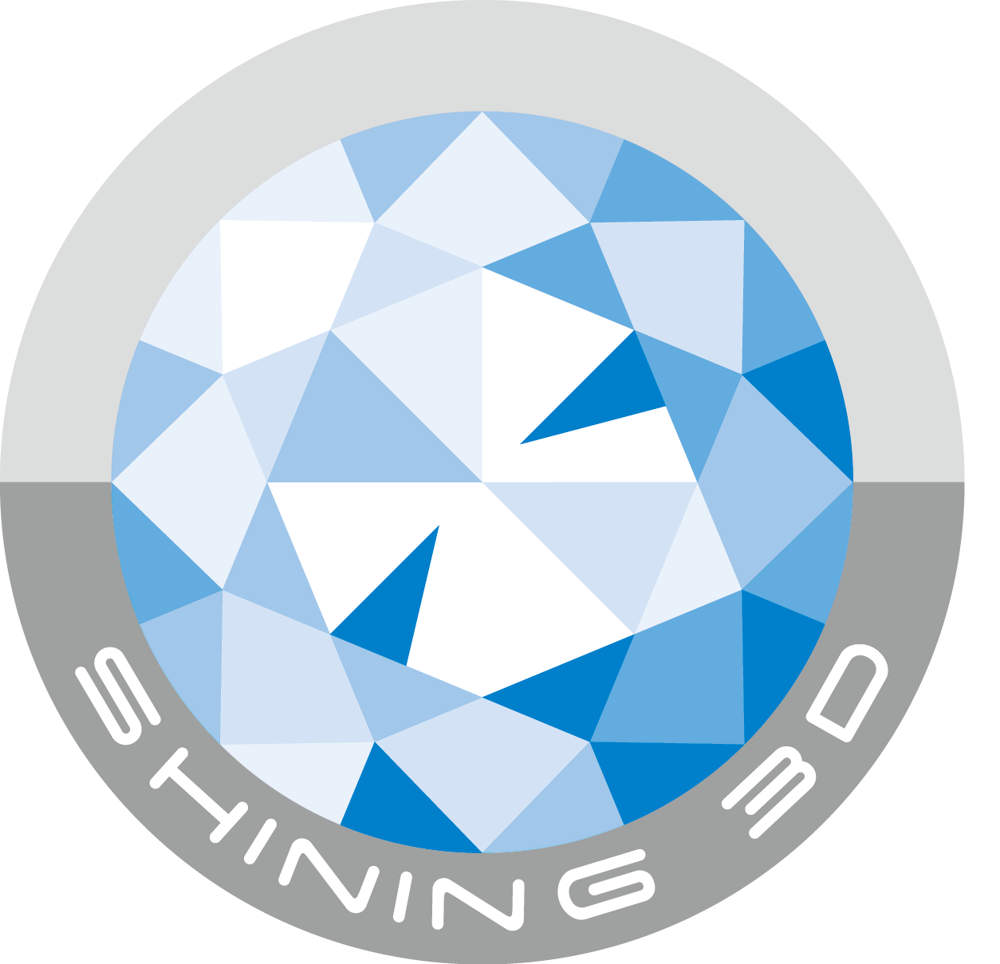
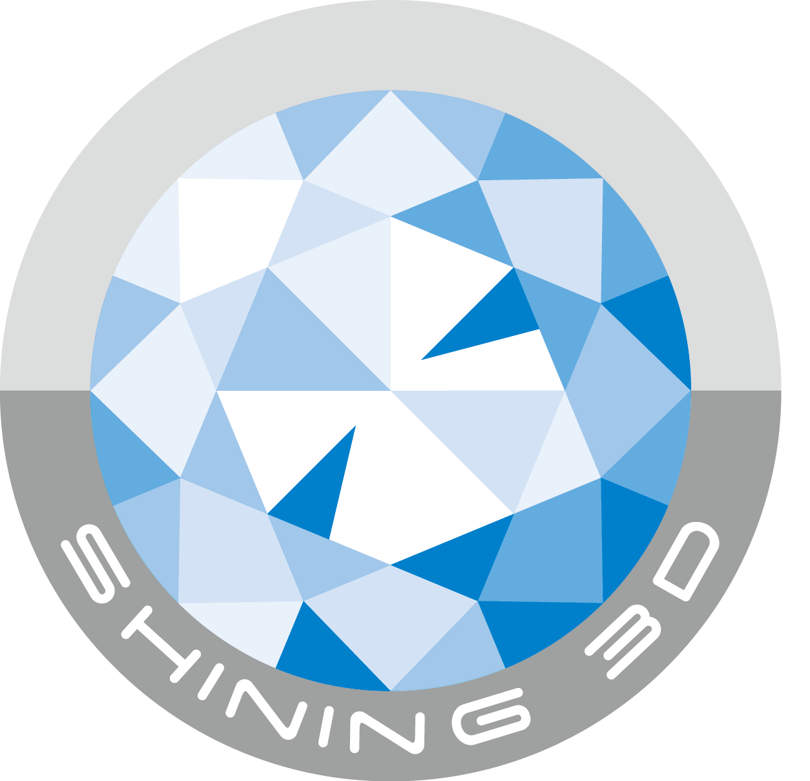

Sonrisas radiantes
comienzan con una
planificación
precisa.
Radiologia oral de alta calidad
Precision que marcan la diferencia en la salud oral.

Nos ubicamos estratégicamente en las mejores zonas, cercanas a los principales consultorios para brindarte un acceso conveniente y rápido a nuestros servicios.
¡Estamos aquí para ti! Contamos con un amplio horario de atención de lunes a sábado para adaptarnos a tus necesidades y brindarte el mejor servicio cuando más lo necesites.
Nos esforzamos continuamente para asegurarnos de que cada uno de nuestros clientes reciba un servicio excepcional que cumpla con los más altos estándares de calidad."
Nuestros servicios garantizan resultados con entrega inmediata, proporcionándote la información que necesitas de manera rápida y eficiente.
Ofrecemos una variedad de paquetes de productos diseñados para satisfacer las necesidades tanto de los odontólogos como de los pacientes. Encuentra la solución perfecta para ti.
Nuestras imágenes son líderes en calidad y funcionalidad. Experimenta la diferencia con nuestros equipos de última generación.


 
